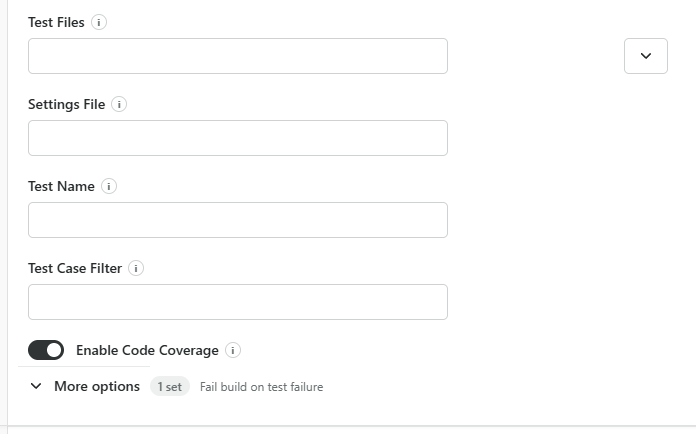

VSTest
Runs unit tests with vstest.console.exe and can report the results. Installations are defined once, under Tools.
When to use it
Use it for MSTest, NUnit or xUnit tests that you run through Visual Studio's test platform, on a Windows agent.
How to set it up
- Open the build configuration and click Settings › Build Steps.
- Click Add build step. Type
VSTestin Filter step types if you like, then click the VSTest tile (group Tests). - Type a Step name, for example
VSTest. - Fill in the fields described below.
- Optional: set Execute step, Conditions and Retry on failure. See The steps list and the step editor.
- Click Save.

Every field
| Field | What it does | Default | Example |
|---|---|---|---|
| VsTest Version | The VSTest installation, from Settings › Tools. | Default installation | VSTest 17 |
| Test Files | The compiled test assemblies. Separate several with a new line or a space. | Empty | Tests\bin\Release\Game.Tests.dll |
| Settings File | Run tests with additional settings such as data collectors. Passed as /Settings:. | Empty | Local.runsettings |
| Test Name | Run tests whose names match. Separate several with commas. Passed as /Tests:. Cannot be used with Test Case Filter. | Empty | TestMethod1,TestMethod2 |
| Test Case Filter | Run tests that match an expression of the form property=value, joined with ||. Passed as /TestCaseFilter:. | Empty | TestCategory=Nightly |
| Enable Code Coverage | Enables the code coverage data collector. Default settings are used unless a settings file says otherwise. | Off | On |
| InIsolation | Runs the tests in an isolated process. The runner is less likely to stop on an error in the tests, but tests may run slower. | Off | On |
| Use Vsix Extensions | Use or skip the installed VSIX extensions in the test run. | Off | Off |
| Use VS 2017 or Greater | Adjusts the arguments for Visual Studio 2017 and newer. | Off | On |
| Platform | Target platform: x86, x64 or ARM. | Empty | x64 |
| .NET Framework Version | Target framework: Framework35, Framework40 or Framework45. | Empty | Framework45 |
| Specify a logger for test results | For example trx for a Visual Studio Test Results File. | Empty | trx |
| Command Line Arguments | Extra arguments for vstest.console.exe. | Empty | /Parallel |
| Fail build on test failure | Fail the build when a test fails. | On | On |
A worked example
Run the game's unit tests with a runsettings file. Step name VSTest, Test Files Tests\bin\Release\Game.Tests.dll, Settings File CI.runsettings, Specify a logger trx.
What you see when it runs
The console shows the vstest.console.exe command and its output, ending with the totals of passed and failed tests. A failed test fails the build when Fail build on test failure is on.
Problems and fixes
| Problem | What to do |
|---|---|
| The version list is empty | Add an installation under Settings › Tools with the folder of vstest.console.exe. |
| Test Name and Test Case Filter both set | Use only one of them. |